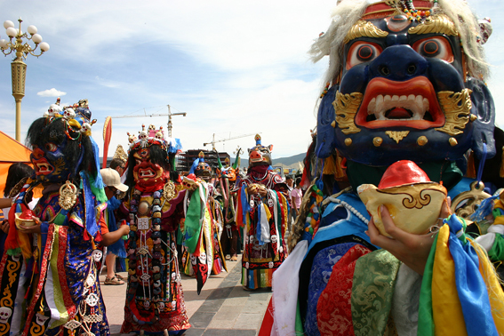
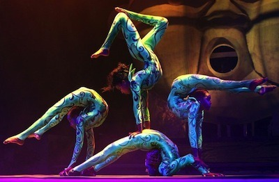

National Dance
Folk Dance
Folk dance music plays an important part in the choreographic art of the Mongols. Movements which can be made within a restricted space are essential features of Mongolian dance, in which the smallness of the space is compensated for by the expressiveness of the movements of the hands, shoulders, chest, waist, eyes and head. Choreography is rich and diverse, since people living in different parts of the country employ different means of expressing their feelings (bielgee ). Many of the folk dances are performed to the accompaniment of the morin huur, sometimes in combination with other instruments. There are also dances which are performed exclusively to the accompaniment of the human voice dance yohor.
That Mongolian dance developed very early is evidenced by a reference in the Secret History: "The Mongols were wont to rejoice, dancing and feasting… they danced until there for example, the Buryad was dust up to their knees."
Tsam
The first tsam of Ikh Khuree of Mongolia was performed in the Year of Iron Sheep of the XIV century or 1811 of Mongolian calendar. This was "Jakhar tsam", which illustrated destruction of iron towns of hell realm soldiers and subduing them by Yamantaka.
The Khuree tsam was performed for the first time by the instructions of Undur Gacheng Lama of IV Bogd invited from Tashi Lkhumpo of Tibet during Saishaalt Yeruult Khaan or in 1811. However, Gacheng Lama did not give sutra of Khuree tsam choreography, due that XII Great Abbot Jidorin Agvanglobsangkhedup of then Khuree wrote "Clarifying Tsam Dance"(gar cham saljed) as a guideline of Khuree tsam in 1836 and it is viewed that the text was equal to original texts written by Tibetan scholars.
Tsams of Tashi Lkhumpo of Tibet, Namgyal Monastery of Lhasa and Ikh Khuree of Khalkha have the same origin, however there are many variations among them. About this it is mentioned in the Agvanglobsangkhedup's text: "Continuity of tsams of Tashi Lkhumpo, Namgyal Monastery and Ikh Khuree is said to the same, however there are many differences such as number, rules of the tsam performance, and many other differences due to the course of time, and sometimes texts of these tsams do not correspond to each other respectively and I refrain myself from writing those again. If one is interested to know more, refer to respective records and numbers of those texts of tsam".
The fact that Khuree tsam was called as summer Jakhar tsam is due to the fact that it was performed in summer seasons extensively. While winter Jakhar tsam did not exceed 9 Shanagas and there was only sor zalakh (burning of all negativities in the fire) in the middle month of winter, therefore winter tsam had a smaller size than of summer's.
Although 21 tsam performers of summer offering jakhar tsam were named as 21 Taras, they were 21 Shanagas. Offering tsam was called as Chogor tsam and it was performed on the 4th of the last month of summer. On the day of tsam, a big thangka of Vajrapani was displayed in the front square of Decheng Galav monastery and in the hour of sheep or between 2pm-3pm, 21 Taras performed tsam. In Tara tsam children aging 13-14 proceed in groups. At the end, White Old Man comes followed by Azar, which signifies the end of short tsam or Offering tsam.
Jakhar tsam or extensive tsam was performed on the 8th and 9th days of the last month of summer. It took place in front of the palace called western palace decorated with images of ten wrathful deities (hangal) and they installed Lyanga under a giant umbrella before the tsam starts. After that, monks recite texts and during that time Shanag chengbo or Chambong performs the tsam without interruption. The Shanag tsam continued for a long time reaching midnight and in some places, it reached the dawn.

In case of days, there was a recitation on the 8th day of the last month of summer and the actual tsam was performed on the next day. In order to do that, chanting of the 9th day of the last month of summer was made one night in advance, followed by tsam performance next day.
Preparation for Khuree tsam recitations starts from the end of the first month of summer and recitations start from the first day of the middle month of summer and it continues upto the 6th day of the last month of summer without interruption. Starting from the 4th day of the last month of summer, preparations of tsam choreography was conducted outside. Costumes of tsam dancers consisted of four items, namely deel with agui sleeves, apron with depiction of powerful animals and long trims at the ends, chest part costume covering two shoulders, chest and back and heavy bone malas attached to chest part. There were 23 groups of mask tsam in succession including Durtod-dakpo in Khuree tsam.
Khuree tsam was bigger, more elaborate in terms of masks, ornaments and handicrafts, rituals and content was more extensive compared to other types of tsam and some researchers concluded that Mongolian tsam was the most "precious" in the world. This distinction is directly connected with the Buddhist scholars and masters of Mongolia and also cultures of certain regions and people. Khuree tsam was performed between 1811-1937 without interruption and during great repression thar took place in Mongolia, it was destroyed like other Buddhist rituals. From 1990-s, democracy was introduced in Mongolia and there was a campaign to revive Mongolian tradition and culture, as a result activities of restoring some ancient temples and forgotten rituals were initiated. There is a great demand for time and funding to revive Buddhist rituals interrupted for over 70 years, and most of all there is a lack of monks who has knowledge to perform those rituals. Nowadays, there is no any obstacles from the side of the state and society and there have been a number of tsam performances in the frame of religious ritual and it is important to organize the events in more expanded forms.
As tsam is a form of secret tantric meditation ritual it is often viewed that is should be kept secret. However, we are not provided with conditions of performing tsam according to the actual secret tantric rules, we believe that it is important to introduce Mongolian tsam, furthermore, Khuree tsam from artistic point of view to the world and organize awareness campaign of it.
In July, 2007, "Goo yertsunts" (Beautiful world) society organized "Khuree tsam-108", although internal meditation was skipped during this performance, externally it was beneficial to help devotees recognize yidams, choijins, protectors and devas and not be afraid of them in their next lives and intermediate states, so to have higher rebirths.
Contortion Art
Much more than just a circus discipline, the contortion in Mongolia is a valuable intangible heritage. Deeply rooted in religious and cultural traditions practice was the unique showcase of Mongolia on the Western world under the communist regime.
At the time of the great Mongol empire, in the thirteenth century, during the festive events of the court, the contortion would have appeared in the form of dances. Also, Zanabazar, the first living Buddha of Mongolia in the seventeenth century would have breathed into the Mongolian contortion its uniques features. The art of contortionist perfection would be intimately linked to statues of the goddess Tara made by Zanabazar.
The Mongolian tradition is characterized by attitudes close to meditation, by the quality of the body warming up and by training techniques used by famous contortionists of Mongolia. The contortion art consists of all flexibility techniques existing in classic danse and gymnastics, going to the limits of the joints of the body.
The center of contortion trains young students in an atmosphere of rest and relaxation. The center offers basic teaching techniques and ways to increase your flexibility to ease our personal life. A natural physical activity, rich experience, strict and rigorous work.
Associated with the peace of mind, the Mongolian contortion is a vision of everyday life, where peace and relaxation are on the menu.